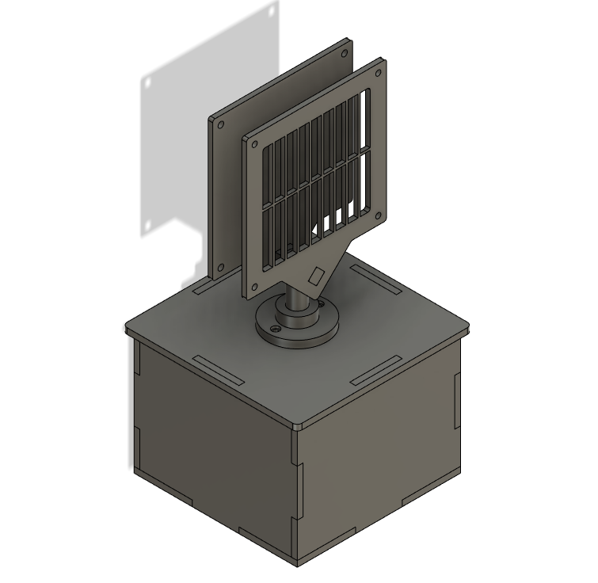
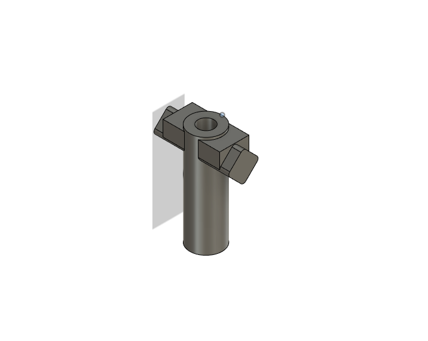
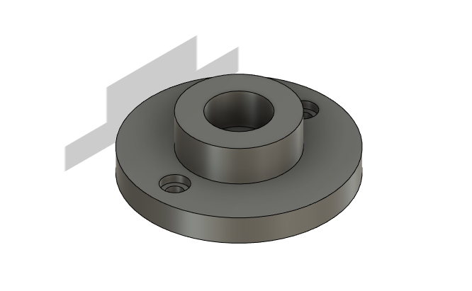
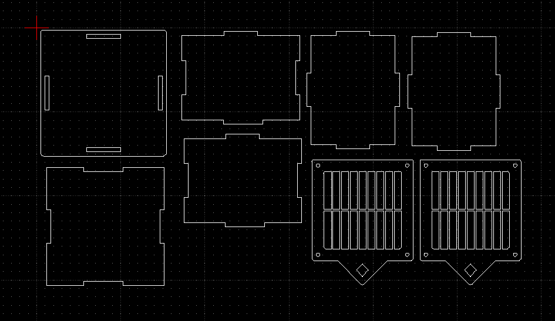
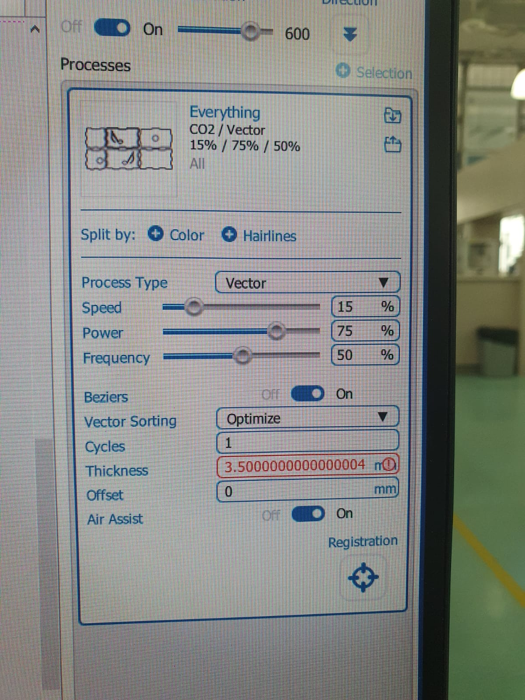
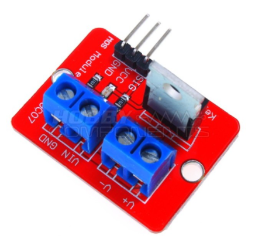
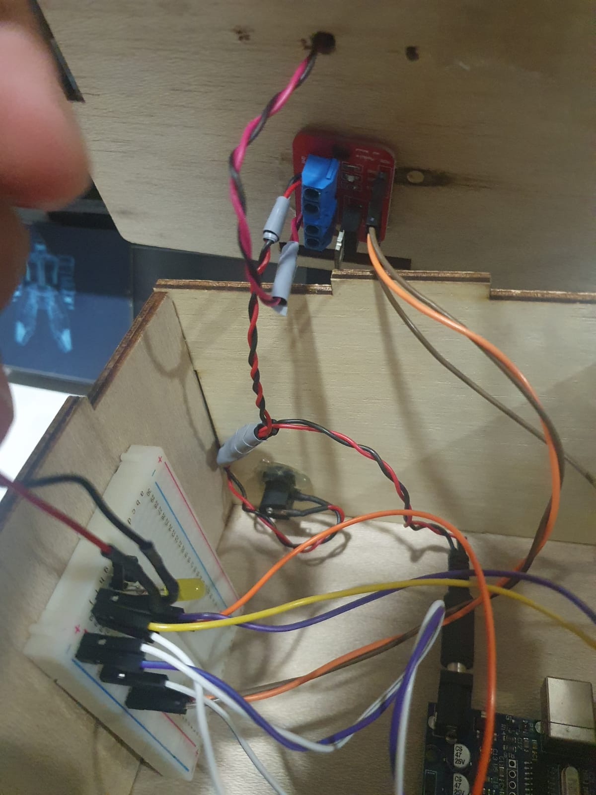

Project page
Concept
I tend to feel stuffy when working at my table at home, so I plan to make a table-top fan which can help create some circulation and make it more comfortable.
However sometimes I have a tendancy to forget to turn off lights in my room so I also want to include a button which I can toggle and will help automaically swich off my fan after a set amount of time (ie, 30mins)
| Project | Fan with speed control |
|---|---|
| Laser cutting | Fan Body, case, electronics box and grills |
| 3D printing | Fan stem, and stem holder |
| input | 2 push buttons |
| output | Fan speed (3 modes) |
Parts/bill of materials
| No. | Part description | Cost | Quantity | Total cost | Remarks |
|---|---|---|---|---|---|
| 1 | 5mm thick ply-wood | $0.00 | 1 | $0.00 | Provided by SP FabLab |
| 2 | Arudino UNO | $0.00 | 1 | $0.00 | Provided by SP FabLab |
| 3 | 12V dc fan | $0.00 | 1 | $0.00 | Provided by SP FabLab |
| 4 | Push Buttons | $0.00 | 2 | $0.00 | Provided by SP FabLab |
| 5 | Breadboard | $0.00 | 1 | $0.00 | Provided by SP FabLab |
Fusion 360 design
Using fusion 360 i came up with a design for the parts which can later on be fabcated
3D printed parts
All 3D printed parts are printed with PLA
 This is the stem of the fan which will all the fan direction to be adjusted to point at me without turning the entier assmebly, the stem and its mountng point to the holder has a clear passage inside to all the wires to be routed inside hiding it and preventing in tangling outside the housing
Laser cut Parts
laser cut parts are on 5mm thick wood
Fabication process

laser cutting
Setings used for laser cutting

3D printing
Not much infill was required as the weight supported was quite small, only 30% in fill was used with a 1mm wall thickness.
Electronics
Arudinos are not able to handle too much current going through it and hence will not be able to run th 12V DC fan without damage to the Arudino Unit
To solve this we used a Mosfet, a mosfet is a transistor which can use low voltage signals to control high voltage lines, this protects the Arudino from burning out
the mosfet works by supplying low voltage lines to the sig, VCC and GRN connectors, the high volatge source input is connected to the Vin and GRN, the load (fan) is connected to the V+ and V- (output) sides
To use this to control the fan speed we need to use Pulse width modulation, PWM to pulse the high volatge output side usingthe SIG connector


Programme
#define led 4
#define motor 9
#define PBSW 2
#define ts 13
const int speed=64;
int count = 0; // inital count value
void setup()
{
pinMode(led, OUTPUT);
pinMode(motor, OUTPUT);
pinMode(PBSW, INPUT_PULLUP);
pinMode(ts, INPUT_PULLUP);
decode(count);
}
void loop()
{
if (digitalRead(PBSW) == LOW){
// switch was pressed
count = (count + 1) % 4; // only 4 states
decode(count); // display it
// bouncing removed using a delay (or try to)
delay(200);
}
if (digitalRead(ts) == LOW){
// switch was pressed
delay (10000);
count = (count - count);
decode(count);
// bouncing removed using a delay (or try to)
delay(200);
}
}
// decodes count into binary
void decode(int v)
{
switch(v){
case 0:
digitalWrite(led, 0);
analogWrite(motor, 0);
break;
case 1:
digitalWrite(led, 0);
analogWrite(motor, speed);
break;
case 2:
digitalWrite(led, 0);
analogWrite(motor, speed*2);
break;
case 3:
digitalWrite(led, 1);
analogWrite(motor, speed*3);
break;
}
}
intergration
when testing the entire cicuit, the high volatge lines pulsing creates a lot of electro-magnetic interferance, which messes with the ardunio signals, I reseached ways to fix this and it was suggested that twisting the wires together will help cancel the EM interferance created.
twisted high voltage lines RED and Black wires to help reduce the EM interferance create
Presentation slide
Presentation slide can be viewed here :
Presentation slideOwnership card
Ownership slide can be viewed here :
Ownership cardVideo
The yellow button controls the Fan speed
The blue button starts a 30min timer that will auto off the fan afterwards